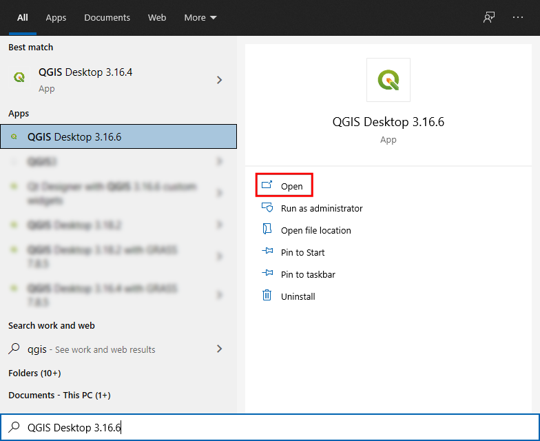

Install QGIS-LTR
A Step-by-step Guide for QGIS installation on Windows, Mac and Linux
Install QGIS on Windows
- Visit the QGIS.org Download page. Click the OSGeo4W Network Installer (64-bit) link to download the installer.
The OSGeo4W Network Installer is the preferred way to install QGIS because it ensures you get all the required dependencies for the software.

- Once downloaded, double-click the
osgeo4w-setup-x86_64.exeto launch the installer. In the OSGeo4W Setup window, choose Advanced Install and click Next.
 3. Leave all the settings to default and click Next until the Select Packages dialog box. Search qgis-ltr and expand the Desktop option, click on the first option to select 3.16.x.
3. Leave all the settings to default and click Next until the Select Packages dialog box. Search qgis-ltr and expand the Desktop option, click on the first option to select 3.16.x.
The minor version shown may be different for you. You can select any version that starts with 3.16.

- Click Next on all following windows with default settings. If everything is successful, QGIS will start downloading. Depending on your internet bandwidth, the installation can take up to 30-minutes.

- Once the download gets completed, search for QGIS in the Windows Start Menu and choose the QGIS Desktop 3.16, click Open.
You may get a different minor version in your start menu than the one shown. This is perfectly fine. Any version starting with 3.16 can be used for this course.

Install QGIS on Mac
- Visit the QGIS.org Download page. Click the QGIS macOS Installer Version 3.16 under the Official All-in-one, signed installers section.

- Once downloaded, double-click the
qgis-macos-pr.dmgfile to open the package. Drag the QGIS-LTR icon to the Applications folder.

- It will copy QGIS to the Application folder. This process can take up to 15 minutes.

- Once finished, Go to the Applications folder. Find the QGIS-LTR application and double-click to launch it.

- The first time you launch the program, you will get a warning that “QGIS-LTR” can’t be opened because Apple cannot check for malicious software. Click OK.

- Go to Preferences → Security & Privacy → General. Click the Lock icon and enter your password. Click the Open Anyway button to launch QGIS. This step needs to be done only once. The next time, you can launch QGIS-LTR directly from the Applications folder.

Install QGIS on Linux
Please follow the instructions for your Linux distribution from QGIS.org Downloads
If your distribution does not have a QGIS package, or you are having difficulty with the installation, you can install QGIS via Conda. This is also the preferred method for PyQGIS Development. Please follow the Using QGIS from Conda guide by Alexander Neto.
To install the QGIS-LTR version from Conda, you must specify the full version name.
conda install qgis=3.16.8 --c conda-forge